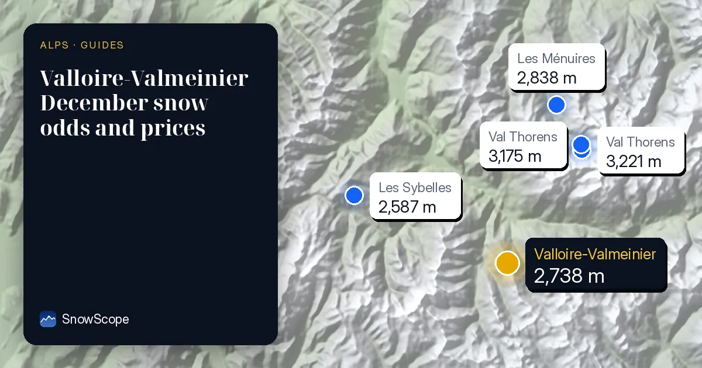

احتمالات التلج والأسعار فـ Valloire-Valmeinier فـ شهر دجنبر
إلا كنتي كتخطط لرحلة تزلج لـ Valloire-Valmeinier هاد دجنبر، احتمالات التلج كتعلق بزاف بالسيمانة اللي غتختار. التاريخ ديالنا ديال التلج لـ 46 شتوات اللي فاتو كيبين بلي واخا التلج كيكون قليل فـ اللول، الجهة الفوقانية ديال البيست موثوقة بزاف. فـ نص دجنبر، منطقة وسط المحطة عندها احتمال 98 % يكون فيها على الأقل 30 سم ديال التلج.
شوف توقعات التلج مباشرة ديال Valloire-Valmeinier فالتطبيق ديال SnowScopeالعلو ديال التلج، التنبيهات والخريطة 3D، فابور.
احتمالات التلج السيمانية فـ القاعدة
فـ لتحت ديال المصاعد، اللي كاينين فـ 1406 م، السيمانة اللولة ديال دجنبر غالبا كيكون التلج فيها قليل. فـ التاريخ ديالنا ديال التلج، غير 26 % من الشتوات اللي فاتو كان فيها على الأقل 30 سم ديال التلج فـ السيمانة اللولة. هاد الاحتمال كيزيد كلما داز الشهر. فـ السيمانة الثانية، الفرصة باش يكون 30 سم فـ القاعدة كطلع لـ 43 %، وكتوصل لـ 50 % بين 15 و 21 دجنبر. بالنسبة لسيمانة الكريسماس، الاحتمالات كتحسن لـ 65 %.
إلا كنتي كتقلب على قاعدة غارقة ديال 50 سم أو كتر فـ 1406 م، الأرقام كيكونوا قل بزاف. فـ السيمانة اللولة ديال دجنبر، هادشي وقع غير فـ 2 % من الشتوات اللي فاتو. فـ السيمانة اللخرة ديال الشهر، الفرصة ديال قاعدة بـ 50 سم باقة غير 30 %. التلج عادة كيبدا يشد فـ الأرض فهاد العلو تقريبا فـ 22 أكتوبر، والعلو المعتاد فـ 15 دجنبر هو 29 سم.

الموثوقية فـ وسط المحطة والقمة
الوضع كيتبدل بزاف ملي كطلع لفوق فـ الجبل. فـ وسط المحطة، اللي هي 2072 م، العلو المعتاد فـ دجنبر هو 66 سم. فـ السيمانة اللولة ديال الشهر، كاين احتمال 76 % يكون عندك على الأقل 30 سم ديال التلج. فـ السيمانة الثانية، هادشي كيطلع لـ 87 %، يعني تقريبا 9 شتوات من كل 10. لباقي الشهر، الاحتمال هو 98 %، يعني تقريبا كل شتوة.
فـ القمة ديال المصاعد، اللي كتوصل لـ 2738 م، التلج موثوق بزاف من بداية الشهر. كاين احتمال 98 % ديال 30 سم فـ السيمانة اللولة، ومن شتاء 1980-81، ديما كيكون على الأقل 30 سم من 8 دجنبر لفوق. العلو المعتاد فـ القمة فـ 15 دجنبر هو 123 سم، والذروة المعتادة فـ الموسم فهاد العلو هي 300 سم.
القيمة مقابل الفلوس فـ البيست
منطقة التزلج المرسمة فيها 131 كم ديال البيست و 34 مصعد، مع فرق فـ العلو ديال 1332 م. بالنسبة للناس اللي كيجيو بكري، كاين تمن خاص لويكاند الافتتاح ديال 5-6 دجنبر 2026. تذكرة مع دخول لحلبة التزلج على التلج كدير 20 EUR. هاد تمن رخيص بزاف لويكاند ديال التزلج إلا وصل التلج بكري.
لباقي الموسم، تذكرة Galibier-Thabor ديال نهار واحد للكبار كدير 54.90 EUR بالتمن العادي. إلا كنتي غتجلس سيمانة كاملة، تذكرة Galibier-Thabor ديال 6 أيام للكبار كدير 278.50 EUR. هاد الأثمنة من الموقع الرسمي لموسم شتاء 2026-27 وكيعطيو دخول للمنطقة كاملة المرتبطة بين Valloire و Valmeinier.
مقارنة Valloire مع Serre Chevalier
لجنوب ديال Valloire-Valmeinier، Serre Chevalier محطة كبر بـ 157 كم ديال البيست و 70 مصعد. واخا Serre Chevalier عندها فرق فـ العلو كبر بـ 1546 م، Valloire-Valmeinier غالبا كيكون عندها تلج غارق كتر فـ العلوات المهمة. فـ وسط المحطة، Valloire (2072 م) عندها علو معتاد فـ دجنبر ديال 66 سم، بينما Serre Chevalier (1992 م) عادة عندها 58 سم. فـ القمة ديال المصاعد، Valloire (2738 م) كتسجل علو معتاد ديال 126 سم مقارنة بـ 111 سم فـ Serre Chevalier (2765 م).
احتمال يكون عندك 50 سم أو كتر فـ وسط المحطة فـ السيمانة التالتة ديال دجنبر هو 80 % فـ Valloire، ولكن غير 59 % فـ Serre Chevalier. الأثمنة حتى هي كتختلف فـ فترة العطل. تذكرة ديال 6 أيام فـ Serre Chevalier كدير 276.00 EUR قبل 18 دجنبر، ولكن كتطلع لـ 345.00 EUR من 19 دجنبر لـ 1 يناير. بالمقارنة، تذكرة Valloire ديال 6 أيام كدير 278.50 EUR لنفس الفترة.
الاتجاهات التاريخية والظروف الحالية
التاريخ ديالنا ديال التلج لـ 46 شتوات اللي فاتو كيبين بلي علو التلج فـ دجنبر زاد عموما. فـ الـ 15 شتاء اللولة فـ السجلات ديالنا، من 1980-81 لـ 1994-95، وسط الجبل كان فيه فـ المعدل 55 سم فـ دجنبر. فـ الـ 15 شتاء اللخرة، من 2011-12 لـ 2025-26، هاد المعدل طلع لـ 69 سم. فـ القمة ديال المصاعد، المعدل زاد من 106 سم لـ 129 سم بين هاد جوج فترات. فـ شتاء معتاد، كاين 226 يوم ديال التلج فـ وسط المحطة.
فـ 13 نونبر 2026، تقدير التلج دابا كيبين 0 سم فـ القاعدة ووسط المحطة، مع 16 سم فـ القمة. الـ 7 أيام الجاية التوقعات كتقول بلي غيجيبو 22 سم ديال التلج الطري للقاعدة، 58 سم لوسط المحطة، و 82 سم للقمة. بين 13 نونبر و 26 نونبر 2026، النظرة ديال جوج سيمانات لوسط المحطة والفوق كتقترح مجال من 69 سم لـ 99 سم ديال التلج الطري، مع تقدير متوسط ديال 84 سم.
نصايح للي كيتزلجو
- حجز لسيمانة 22-28 دجنبر إلا بغيتي أحسن فرصة للتلج فـ قاعدة 1406 م، اللي عندها احتمال 65 % ديال 30 سم.
- ركز التزلج ديالك فوق 2072 م فين كاين احتمال 98 % ديال علو تلج 30 سم من 15 دجنبر لفوق.
- شري تذكرة Galibier-Thabor ديال 6 أيام للكبار بـ 278.50 EUR من الموقع الرسمي باش تغطي 131 كم ديال البيست.
- ديما شوف النشرة ديال الانهيارات قبل ما تفكر فـ أي تزلج خارج البيست، خصوصا ملي العلو فـ القمة كيوصل للمعتاد ديالو 123 سم.
خرائط أخرى (مواقع خارجية)
المراجع والمصادر
- Valloire, official ski pass shop (Galibier-Thabor), winter 2026-27 skipass.valloire.com/fr/
- Serre Chevalier, official booking site, ski passes 2026-27 reservation.serre-chevalier.com/achetez-vos-ski-pass-serre-chevalier-et-autres-prestations.html
- SnowScope, December snow at three heights and today's snow map snowscope.app/
على هاد الأرقام
الأرقام ديال التلج: التاريخ ديال التلج ديال SnowScope، 46 شتوة اللي فاتت (1980-81 حتى ل 2025-26) فتلاتة ديال العلوات فكل محطة (موديل ديال اللي فات مصحح بالعلو: تقدير لمنطقة، ماشي قياسات ديال المحطة)؛ أرقام دجنبر محسوبة من العلو اليومي ديال التلج فهاد الشتوات. التلج دابا والتوقعات ديال جوج سيمانات: توقعات SnowScope (من ECMWF و GFS، مجال ماشي وعد). التيليسييجات والبيستات: الخريطة ديال OpenSkiMap. الأثمنة: الصفحات الرسمية اللي لتحت، متشافة نهار 2026-11-13؛ الأثمنة تقدر تتبدل، شوف قبل ما تحجز.
النشرات الرسمية ديال الانهيارات: Météo-France – Bulletin d'estimation du risque d'avalanche
كيفاش تستاشهد بهاد المقال
للبحث، التعليم ولا الصحافة: الأرقام والرسومات تقدر تعاود تخدم بيهم بحرية تحت CC BY 4.0 مع هاد الاستشهاد.
SnowScope (2026), احتمالات التلج والأسعار فـ Valloire-Valmeinier فـ شهر دجنبر, https://snowscope.app/blog/ar/2026/11/valloire-valmeinier-december-snow-odds-value-2026.html, تشاف ف 2026-11-14
SnowScope (Atlas Labs). (2026, November 14). احتمالات التلج والأسعار فـ Valloire-Valmeinier فـ شهر دجنبر. SnowScope snow reports. https://snowscope.app/blog/ar/2026/11/valloire-valmeinier-december-snow-odds-value-2026.html
BibTeX
@misc{snowscope2026valloirevalmeinierdecemb,
author = {{SnowScope (Atlas Labs)}},
title = {احتمالات التلج والأسعار فـ Valloire-Valmeinier فـ شهر دجنبر},
year = {2026},
month = nov,
howpublished = {\url{https://snowscope.app/blog/ar/2026/11/valloire-valmeinier-december-snow-odds-value-2026.html}},
note = {Published 2026-11-14 13:29 UTC; accessed 2026-11-14}
}· CC BY 4.0 · الطريقة، الداتا والأدوات →
Valloire-Valmeinier: التلج والحرارة حسب العلو، هاد الشتا مقارنة مع اللي فاتت (الأدوات) →
تابع Valloire-Valmeinier
فابور: ميساج ملي يجي التلج، والتوقعات كل صباح.